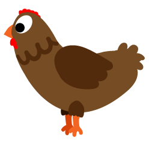
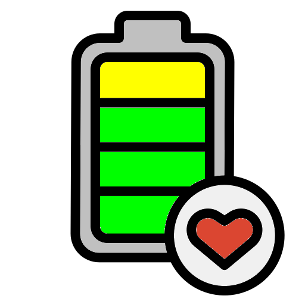
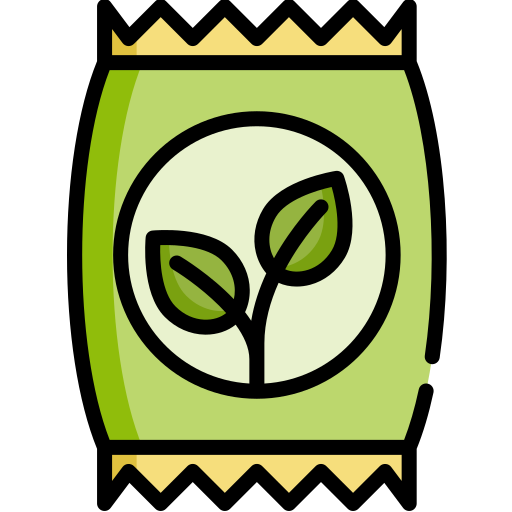
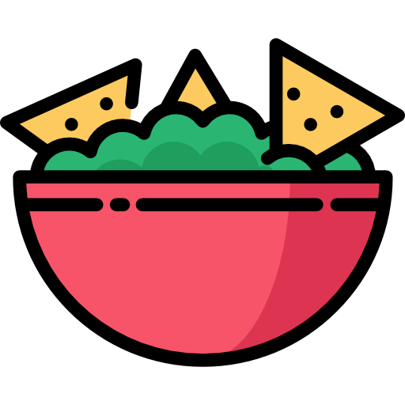
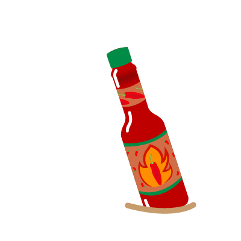
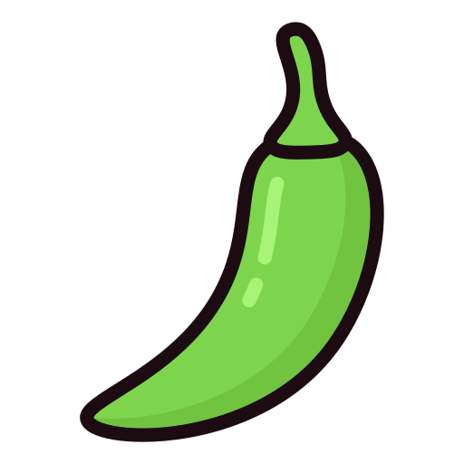
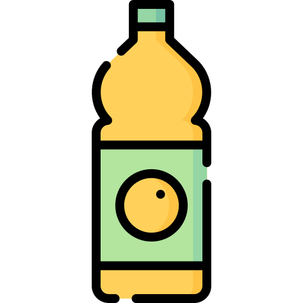
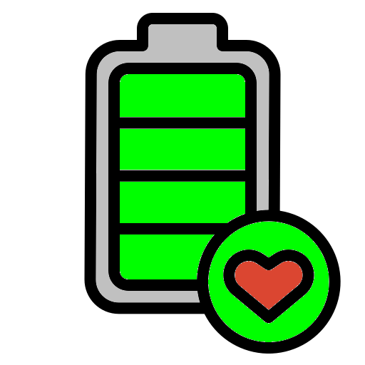
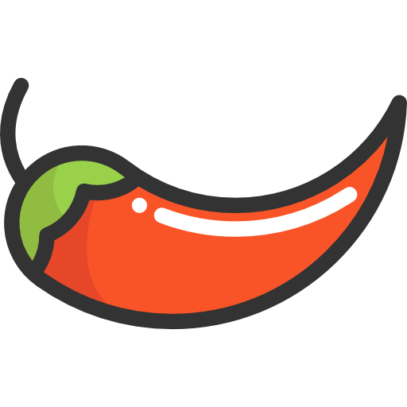

El Pollo Loco - Help
1. Game
Pepe ist auf dem Weg nach Hause. Dabei muss er die mexikanische Wüste durchqueren, in der allerlei Gefahren auf ihn lauern:
 Vogelspinnen
Vogelspinnen- Skorpione
- Schlangen
- wilde Bienen beschützen meist ihren Bienenstock mit Honig
- aggressive Hühner
- und am Ende wartet auch noch Seniora Gallina, das grösste und böseste aller Hühner...
Und alle trachten sie Pepe nach dem Leben oder können ihn verletzen. In der Statusleiste zeigt dir dieses Symbol  deine Lebensenergie an. Hüte dich also vor ihnen, indem du über sie hinweg springst. Allerdings kostet jeder Sprung in der trockenen, heissen Wüste auch Kraft.
Wieviel Sprungkraft du noch hast, zeigt dir dieses Symbol:
Mit Ausnahme der Schlangen und der wilden Bienen kannst du deine Feinde auch töten, indem du auf sie drauf springst.
Allerdings werden alle verbleibenden Hühner dadurch noch aggressiver, wenn du eines ihrer Artgenossen killst. Daher kannst du sie, mit Ausnahme der bösen Seniora Gallina, mit Futter  besänftigen.
Über jedem gefütterten Huhn erscheint ein Herz
 und es wird dich nicht mehr angreifen.
und es wird dich nicht mehr angreifen.Hüte dich jedoch davor, ein gefüttertes Huhn zu töten, denn das wird nicht ohne Folgen sein...
2. Food
Es gibt verschiedene mexikanische Gerichte, die du einsammeln kannst, um bei Kräften zu bleiben:
 Obst und Gemüse,
Obst und Gemüse, Nachos,
Nachos,- Tortillas,
-  Tacos,
 Burritos,
Burritos, Burger,
Burger, Barbecue und einige mehr.
Barbecue und einige mehr.
Sorge also dafür, dass du immer genügend Münzen oder Diamanten bei dir hast.
3. Coins & Diamonds
Um Essen, Chili-Schoten, Tequila oder Medizin kaufen zu können,
- brauchst du Münzen oder Diamanten.

Dabei gilt: Je höher sie sich befinden, desto wertvoller sind sie.
4. Bottles & Chili
Sammle soviel wie möglich Flaschen mit Salsasauce,

um damit die gefährliche Seniora Gallina aus dem Weg zu räumen!
Du kannst maximal 10 Flaschen gleichzeitig tragen.
Je schärfer deine Salsa ist, desto leichter ist Seniora Gallina zu besiegen.
Du kannst die Schärfe deiner Salsa erhöhen, indem du genügend Chili-Schoten sammelst.
Achte darauf, dass du nur die roten Chilis einsammelst.
ACHTUNG! Grüne Chili-Schoten

 vermindern die Schärfe der Sauce wieder!
vermindern die Schärfe der Sauce wieder!
5. Drinks
Die beste Waffe ist nutzlos, wenn man damit nicht trifft!
Genügend Coins vorausgesetzt, kannst du deine Treffsicherheit
allerdings jederzeit verbessern, und zwar mit Feuerwasser!
Bier, Rum, Whiskey, Tequila... je hochprozentiger, desto besser triffst du!

ACHTUNG! Die Sache hat jedoch einen Haken:
Säfte und Sirup

verbessern zwar deine Lebensenergie, verringern aber deine Treffsicherheit!
6. Medicine
Solltest du verletzt sein und deine  Lebensenergie sich zu stark verringern,
gibt es drei Möglichkeiten, dich wieder zu erholen:
- sammle Medizin oder Ginseng, sofern du genügend Coins hast,
-
 finde Medizin in Truhen und Gefässen
finde Medizin in Truhen und Gefässen
- oder kaufe sie in einem Shop.
ACHTUNG! Nicht jede Medizin wirkt gleich gut!
Die weissen Medizinflaschen sind weniger wirksam als die roten. Am besten hilft Ginseng.
7. Bonus Items & Shop
Es gibt einige Gegenstände in der Wüste, die du nicht einfach einsammeln kannst. Dazu gehören:
 ein Revolver,
ein Revolver,- Kugeln für den Revolver,
 Schlüssel zum Öffnen von Truhen,
Schlüssel zum Öffnen von Truhen,- und Hühnerfutter.
Kugeln und Hühnerfutter findest du in allen möglichen Gefässen oder Truhen.
Einen Revolver kannst du im Shop kaufen. Er kostet in jedem Level 1.000 Coins mehr!
Mit viel Glück kannst du ihn auch in einer der Truhen finden, für die du wiederum einen Schlüssel benötigst. Es ist in jedem Level ein Revolver versteckt. Du kannst allerdings nur einen besitzen!
Schlüssel kannst du in allen möglichen Gefässen finden.
ACHTUNG! Mit jedem Level nimmt die Anzahl der versteckten Gegenstände ab!
DER SHOP...
Jedes Level besitzt einen Shop, in dem du Medizin, einen Revolver oder Kugeln kaufen kannst, sofern du genügend Coins hast.
Du kaufst einen Gegenstand, indem du die B-Taste drückst, während du vor dem Shop stehst.
Dabei gilt jedoch folgende Prioritätenfolge:
1. Medizin
2. Revolver
3. Kugeln
Sobald deine Lebensenergie 50% unterschritten hat, wird immer zuerst Medizin gekauft!
Wenn sie über 50% beträgt, wird ein Revolver gekauft. Die Kosten für den Revolver betragen 1.000 Coins pro Level!
Kugeln kannst du nur dann kaufen, wenn du schon einen Revolver besitzt und deine Lebensenergie mindestens 50% beträgt.
8. Seniora Gallina
Am Ende jedes Levels wartet Seniora Gallina - EL POLLO LOCO - auf dich!
Ihr Wille, dir den Garaus zu machen, nimmt mit jedem Level zu.
Du kannst sie besiegen, indem du sie mit Salsa-Flaschen bewirst, die du vorher gesammelt hast.
Du wirst umso erfolgreicher sein, je schärfer deine Salsasauce und je besser deine
Treffsicherheit ist!
Eine weitere Möglichkeit, sie aus dem Weg zu räumen besteht darin, sie zu erschiessen, sofern du einen geladenen Revolver hast!
Auch hier ist deine Treffsicherheit gefragt!
ACHTUNG! Du kannst den Revolver nur dann einsetzen, wenn du keine Salsa-Flaschen mehr hast!
Zuerst werden immer alle Salsa-Flaschen verwendet!
9. Statusbar
In der Statusleiste findest du folgende Symbole, deren Bedeutung und womit man sie verbessern kann:
- Lebensenergie ⊳ Medizin & Ginseng
- Sprungkraft ⊳ Nahrung
-
Treffsicherheit ⊳ Alkohol: Tequila, Whiskey, Rum, Bier etc.
- Schärfe deiner Salza-Sauce ⊳ Chili 
-
Gold & Diamanten ⊳ einsammeln oder in Gefässen und Truhen
-
Schlüssel für Truhe ⊳ in Gefässen
usw.
 Kugeln ⊳ in Gefässen und Truhen
Kugeln ⊳ in Gefässen und Truhen Revolver ⊳ kaufen im Shop, oder in Truhen
Revolver ⊳ kaufen im Shop, oder in Truhen- Futter ⊳ in Gefässen und Truhen
Schlüssel, Kugeln, Revolver und Futter werden nur angezeigt, wenn du diese auch besitzt.
Wenn du keinen Revolver, aber Kugeln hast, werden nur die Anzahl der Kugeln angezeigt.
Sonst ist der Revolver, mit der Anzahl Kugeln sichtbar. Es können maximal 6 Kugeln im Revolver sein!
10. Navigation
Du kannst Pepe mit folgenden Tasten durch die mexikanische Wüste navigieren:
- Cursor links ←nach Westen
- Cursor rechts →nach Osten
- Cursor hoch ↑Sprung
- Space-Taste SPACEAction: Sammeln, Flasche werfen, Verstecke durchsuchen
- Control links CTRL-LHühner füttern {wenn Körner vorhanden sind}
- Taste BBuy - Einkaufen im Shop
- Taste PPause
- Taste Esc/QQuit - beendet das Spiel und kehrt ins Hauptmenü zurück
- Taste SSpiel speichern
- Taste F8Vollbild-Modus
11. Credits & Impressum
Credits gehen an:
Junus Ergin und Mihai-Andrei Neacsu für den Support und die Geduld mit mir beim Erstellen des Projektes.
Icons und Bilder, die nicht vom Projekt EL POLLO LOCO der Developerakademie zur Verfügung gestellt wurden,
stammen von der Seite flaticon.com
Der Titelsong #1 ist eine Kurzfassung der Instrumentalversion des Songs
"Don't le me be misunderstood" der Gruppe "Santa Esmeralda" aus dem Jahre 1977.